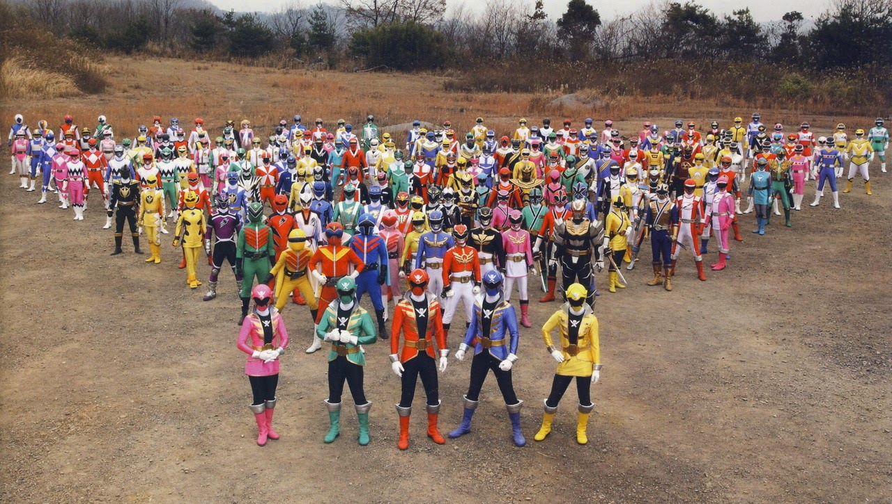

Power Rangers is an American television series that is an adaptation of the Japanese Super Sentai series. It revolves around a group of teens who don super suits that give them certain powers, abilities, and weapons. They use their powers to fight off evil villains whose goal is to take over the world. The teens are also given zords: giant vehicles used to fight monsters when they grow to the size of skyscrapers. The zords can be combined to form a megazord: a giant robot with the combined power of all the rangers that is also operated by the rangers. Each ranger has their own color suit that corresponds to their power and/or role in the team; for example, the red ranger is always the leader of the ranger team.
The first season aired in 1993 and the show is currently still airing on Nickelodeon. Power Rangers consists of 28 seasons of 21 different themed heroes. From dinosaurs to ninjas, Power Rangers has explored many ways for the rangers to defeat evil. Although each new season isn’t necessarily related to the previous ones, all the Power Rangers seasons are in the same universe. Consequently, there have been many cameos and references to older seasons throughout the series. The Power Rangers series has impacted several generations of children and will continue to do so. To this day, Power Rangers actors from the earlier series are revered and conventions are held for the Power Rangers fan community.
Teamwork
Courage
Integrity
Duty
Humility